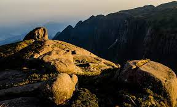
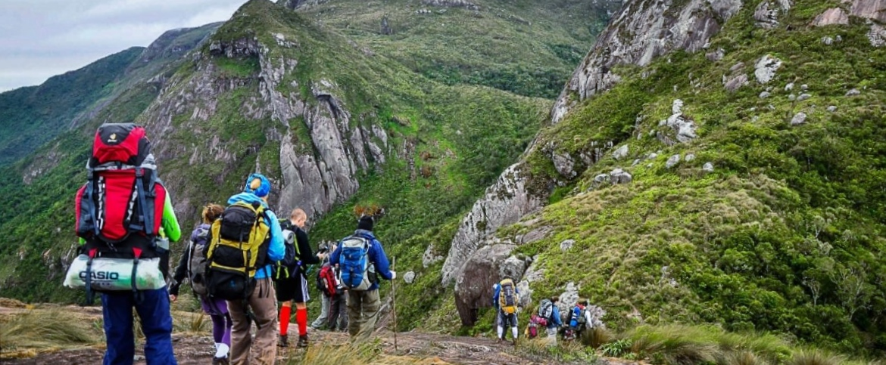
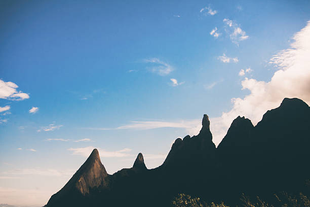

Trilhas Incríveis em Teresópolis

Pedra do Sino
A mais famosa e desafiadora trilha do Parque Nacional da Serra dos Órgãos, levando ao ponto mais alto de Teresópolis. Vista panorâmica espetacular.
Saiba Mais

Trilha Cartão Postal
Uma caminhada mais leve com belas paisagens, perfeita para um passeio em família ou para quem busca vistas icônicas com menor esforço.
Saiba Mais

Trilha do Dedo de Deus
Uma trilha icônica que leva a pontos de observação privilegiados do famoso Dedo de Deus, um dos símbolos de Teresópolis.
Saiba MaisTrilha dos Deuses
Explore a beleza natural da serra por caminhos menos conhecidos, revelando cachoeiras escondidas e flora exuberante.
Saiba Mais